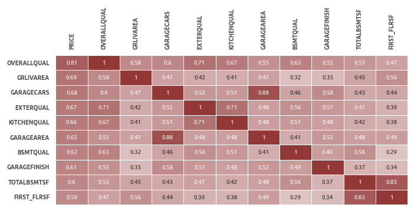

3Сочетание регрессионного анализа и машинного обучения для увеличения точности и интерпретируемости модели
Регрессионный анализ, машинное обучение, описательная аналитика, предиктивная аналитика
🏡 Ссылка на репозиторийОбзор и краткие результаты
Современные алгоритмы машинного обучения превосходят классические регрессионные модели в точности прогнозов, но при этом сложны в интерпретации. Некоторые алгоритмы имеют встроенный функционал приоритизации предикторов, но этого недостаточно для оценки взаимосвязей в данных.
Этапы
Секция I: Исследование и подготовка данных
На первом этапе проводится первичный анализ данных, визуализация, а также необходимые преобразования. Среди прочего заполняются пропущенные значения, выявляются и исправляются противоречия в данных, определяются наиболее значимые и создаются дополнительные предикторы, данные кодируются и стандартизируются. По итогам каждого этапа преобразований обучается промежуточная модель LightGBM, которая используется как бенчмарк для HousePricePredictor.
- очищенный и преобразованный датасет;
- датасеты для пайплайнов секции машинного обучения;
- три промежуточные ML-модели.
Секция II: Регрессионный анализ
В этом разделе рассматриваются две регрессионные модели: эластичная сеть и линейная регрессия (без регуляризации).
Для эластичной сети подбирается оптимальное значение гиперпараметра \( \alpha \) и строится график зависимости RMSE от числа используемых предикторов. Десять наиболее релевантных предикторов используются для построения линейной регрессии. После диагностики регрессии, она сравнивается с эластичной сетью с применением ресэмплинга.
- линейная модель для первого уровня итогового оценщика HPP
- эластичная сеть для итогового сравнения с другими моделями.
Секция III: Машинное обучение
Секция машинного обучения состоит из двух частей.
- ML-модель для прогноза остатков регрессии;
- ML-модель для прогноза цены дома.
Секция IV: Подведение итогов
На заключительном этапе проводится сравнение имеющихся моделей, делается заключение об эффективности оценщика HPP, исследуются остатки его прогнозов, предлагаются шаги для дальнейшего исследования данных и развития структуры HPP.
- оценка HPP;
- рекомендации по дальнейшим шагам.
Результаты
Предсказательная эффективность HousePricePredictor (HPP)
График демонстрирует эффективность прогнозирования семи моделей, построенных на разных стадиях проекта.
Base - базовая модель LightGBM после удаления пропусков;Base (Clean) - промежуточная модель LightGBM после очистки данных;Base (FE) - промежуточная модель LightGBM после генерации новых признаков;Elastic Net - лучшая регрессионная модель (эластичная сеть);SVM - лучшая линейная ML-модель;Stacking - лучшая ML-модель;HPP - HousePricePredictor - комбинация линейной регрессии и стэкинга.

В ходе проекта удалось снизить ошибку RMSE c 0.1216 у базовой модели до 0.0969 итогового оценщика HousePricePredictor. На этапе преобразования наибольший вклад внесла очистка данных, а несколько дополнительно сгенерированных предикторов полезны как для линейной регрессии, так и для более сложных алгоритмов машинного обучения (см. '8. Создание дополнительных предикторов', '12. Линейная регрессия', '15. Оценка независимых ML-моделей').
Интерпретациия модели
Ядром HousePricePredictor является классическая линейная регрессия. Коэффициенты и доверительные интервалы представлены в таблице ниже.

- С увеличением средневзвешенной площади этажей на 1% цена увеличивается на 0.144%;
- С увеличением качества материалов на 1 пункт цена увеличивается на 8.8%;
- С увеличением возраста дома на 1 год цена уменьшается на 8.5%
Интерпретацию остальных коэффициентов см. в разделе '12. Линейная регрессия'.
Визуализация актуальных и предсказанных HousePricePredictor цен

Ось абсцисс - элементы, отсортированные по суммарной площади первого и второго этажа
Секция I. Исследование и подготовка данных
Описание датасета
В проекте используется один из датасетов, опубликованных на Kaggle. Это задача регрессии, в которой требуется спрогнозировать стоимость дома, используя значения его характеристик и исторические данные о предыдущих сделках.
- Число предикторов - 79;
- Число элементов - 1460.
Данные разбиваются на два датасета в соотношении 9 к 1: обучающий train (1314 элемента) и проверочный test (146 элемента).
Целевая переменная
Распределение целевой переменной напоминает гамма-распределение. Это одномодальное распределение с вершиной в районе 150000$ и правосторонней асимметрией.

Характеристики
В датасете 79 независимых переменных:
- Количественные признаки - 34;
- Категориальные признаки - 45:
- Порядковые - 18;
- Номинативные - 27.
Группы предикторов
Для более детального анализа предикторы разделяются на группы. Это полезно для генерации дополнительных признаков, являющихся производными от основных характеристик, а также для проверки данных на противоречия.
Сформировано 12 категорий предикторов:
- Качество помещений и материалов;
- Относящиеся к гаражу;
- Относящиеся к подвалу;
- Предикторы, связанные с площадью;
- Типы помещений (комнаты, подвал);
- Год постройки дома/гаража, модернизации, и т.д.;
- Двор и область вокруг дома;
- Строительный материал;
- Конструкционные особенности;
- Состояние (уровень износа);
- Удобства;
- Окружение (район, улица, и т.д.);
- Организационные аспекты продажи.
Заполнение отсутствующих значений
Категориальные переменные
У некоторых переменных количество пропущенных значений достигает почти 100% от общего числа элементов.
Номинативные
Количественные переменные
Пропущенные значения имеются у трех количественных переменных:
lotfrontage - длина участка улицы, прилегающей к придомовой территории
237 (18%) пропусков заполняются медианным значением. Помимо этого, обнаружены два потенциальных выброса (выделены красным).
garageyrblt - год постройки гаража
73 (6%) пропусков заполняются годом постройки дома.
masvnrarea - площадь облицовки фундамента
8 (1%) пропусков. Более детальное изучение этой и связанных с ней переменных показывает, что все пропущенные значения соответствуют отсутствию облицовки (переменная
Базовая модель
Алгоритм LightGBM используется в качестве базовой модели, потому что он оптимален с точки зрения эффективности и производительности.
Чтобы предотвратить утчеку данных применяется
Результаты 1-го этапа подбора гиперпараметров
Лучшие результаты (RMSE примерно 0.130) показывают сложные модели с большим числом деревьев (75), увеличение числа листьев положительно сказывается на эффективности модели. Оптимальная скорость обучения - 0.1. RMSE лучшей модели - 0.1282.

Результаты 2-го этапа подбора гиперпараметров
Ошибка уменьшилась незначительно - с 0.1282 до 0.1276.
ML-модель №1 (базовая)
Таким образом, базовая модель (RMSE: 0.1276) имеет следующую конфигурацию:
Это первый ориентир, показывающий насколько хорошо имеющиеся данные подходят для прогнозирования цены дома. Также базовая модель дает представление о наиболее значимых предикторах. Можно отметить, что 7 из 10 ключевых предикторов связаны с площадью. На общем фоне заметно выделяется суммарная площадь первого и второго этажа (
Исследование данных
Матрица корреляций
В топ-10 в основном попали оценки площади и качества различных составляющих дома.
Полный набор визуализаций представлен в соответствующем блокноте 'Section2-Explore-and-Clean.ipynb'. Ниже приведены несколько типовых графиков.
Количественные признаки
Ключевые инструменты для исследования количественных переменных - гистограммы и диаграммы рассеяния с добавлением линии регрессии.
Категориальные признаки
Ключевые инструменты для исследования категориальных переменных - диаграмма рассеяния с линией регрессии и точечная диаграмма.
Очистка и проверка данных
Проверка данных на несоответствие
В этом пункте данные проверяются на несоответствие, например, суммарная площадь жилого пространства не должна быть больше или меньше суммы площадей всех комнат.
- У 6 элементов год постройки гаража меньше года постройки дома. В некоторых случаях эта разница составляет несколько лет.
Возможная причина:
- Постройка гаража может быть первым этапом строительства, но после её завершения возможна заморозка стройки, например, из-за финансовых трудностей. Соответственно, сам дом будет достроен только через несколько лет. Такое несоответствие допускается.
Решение:
- Данные не исправляются.
MASVNRAREA (Площадь облицовки фундамента)
- У 7 элементов площадь облицовки равна 0 (эквивалентно тому, что облицовка отсутствует), при этом тип облицовки не равен NA; и наоборот (см. таблицу выше).
Возможная причина:
Ошибка ввода данных.
Решение:
- Исправление вручную. Во время исправления ошибок будем ориентироваться на тип облицовки (
masvnrtype ) и цену дома (price ). На графике видно, что наиболее дорогие - это дома с облицовкой из камня (Stone) и кирпича (BrkFace).
В данных имеется три различных типа противоречий, и соответственно, будут исследованы три группы элементов.
Элементы с индексом 1230 и 733
Противоречие:
- Если
masvnrtype равен NA, тоmasvnrarea должна быть равна 0.
Варианты исправления:
- Или
masvnrtype присваивается какое-то значение, илиmasvnrarea приравнивается к 0.
Решение:
masvnrarea приравнивается к 0.
Аргументы:
- Цены этих домов примерно равны 12.0 - это может говорить о том, что облицовка отсутствует (средняя цена домов без облицовки - 11.9).
- Самое низкое значение переменной
masvnrarea - 10 (см. график ниже); вероятно, 1 - это ошибка ввода данных.
Элементы с индексом 1241 и 688
Противоречие:
- Если
masvnrarea равна нулю, тоmasvnrtype должен быть равен NA.
Варианты исправления:
- Или
masvnrarea присваивается какое-либо значение, илиmasvnrtype меняется на NA.
Решение:
masvnrarea присваивается медианное значение элементов, у которых такой же тип облицовкиmasvnrtype .
Аргументы:
- Цена элементов с нулевой
masvnrarea достаточно большая, что говорит скорее в пользу наличия облицовки (т.е. в пользу того, чтоmasvnrarea не равна нулю), поэтомуmasvnrarea заполняется медианным значением.
Элементы с индексом 624, 1300 и 1334
Противоречие:
- Если
masvnrarea не равна нулю, тоmasvnrtype не должен быть NA.
Варианты исправления:
- Или
masvnrtype присваивается какое-то значение, илиmasvnrarea приравнивается к 0.
Решение:
- Элементы 624 и 1334:
masvnrarea приравнивается к 0; - Элемент 1300:
masvnrtype присваивается значение Stone.
Аргументы:
- Для всех трех элементов выбор сделан исходя из их цены - у дорогих домов чаще встречается
masvnrtype , равный Stone, а у недорогих - NA.
Исправленные данные
Выявление и удаление выбросов
Два подозрительно высоких значения
Далее строятся диаграммы, на которых подозрительные элементы выделены цветом.
ML-модель после очистки данных
Здесь применяется тот же двухэтапный подход, который использовался в пункте "4. ML-модель №1 (базовая)". Лучшая модель демонстрирует RMSE на уровне 0.1233 (у базовой модели RMSE равна 0.1276). Конфигурация модели выглядит следующим образом:
Промежуточные результаты
После очистки и исправления данных модель стала проще и эффективнее.
Создание дополнительных предикторов
На данном этапе предикторы разбиваются на
Предикторы, характеризующие площадь.
Исследовано 17 предикторов, создан 1 дополнительный -
где \( weight_1 \) и \( weight_2 \) - это вес первого и второго этажа соответственно.
После нескольких тестов веса принимаются равными 1 и 0.7, соответственно. Итоговая формула выглядит следующим образом:
Коэффициент корреляции нового предиктора
Предикторы, характеризующие помещения (жилые и ванные комнаты, кухни).
Исследовано 7 предикторов, создано 5 дополнительных -
bedroomsize ,kitchensize : относительное количество спален и кухонь по площади - рассчитывается как количество спален/кухонь, деленное на суммарную площадь первого и второго этажа (grlivarea );bedroomfracrms ,kitchenfracrms : относительное количество спален и кухонь по общему числу комнат - рассчитывается как количество спален/кухонь, деленное на общее число комнат (totrmsabvgrd );bathsfracbedr : относительное число ванных комнат на спальню - рассчитывается как число совмещенных ванных комнат, деленное на число спален (bedroomabvgr ).
Наиболее информативным из новых признаков является относительное число кухонь (
Предикторы, характеризующие даты.
Добавлены новые предикторы